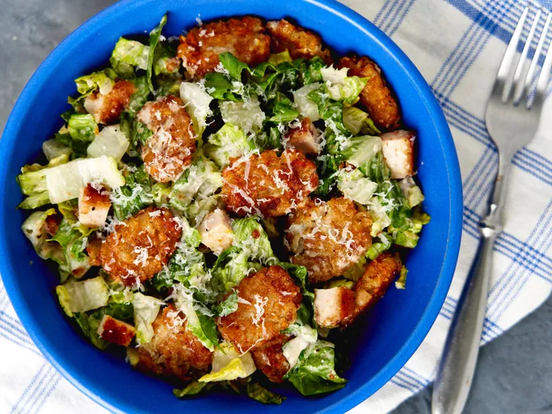

Cripsy Tater Caesar Salad
By: Corey Williams Published on April 10, 2024

This crispy tater Caesar salad is for you if you love fries in a salad. Crispy smashed tater tot
croutons, a doctored-up bottled Caesar dressing, and crispy chicken cutlets join Romaine
lettuce and Parmesan in this meal in a bowl.
Ingredients needed
- 8 ounces frozen crispy chicken cutlets
- cooking spray
- 2 1/2 cups frozen bite-sized potato nuggets (such as Tater Tots®)
- 2 ounces Parmesan cheese, freshly grated with a Microplane, divided, plus more for garnish (about 1 cup)
- 1 cup Caesar dressing
- 1 teaspoon fresh lemon zest
- 1 teaspoon anchovy paste
- 1 teaspoon grated fresh garlic
- 1/2 teaspoon freshly ground black pepper, divided
- 1/4 teaspoon kosher salt
- 4 cups finely chopped Romaine lettuce
- 1 tablespoon white balsamic vinegar
Instructions
-
Preheat the oven to 425 degrees F (220 degrees C). Set 2 shelves near the cente
of the oven. Spray a baking pan with cooking spray; place frozen chicken filets
on the pan.
-
Bake in the preheated oven on the lower-center shelf until hot and crisp, about
20 minutes, turning filets over halfway through heating time. When cool enou
to handle, cut filets into bite-sized pieces.
-
Meanwhile, line a large rimmed baking sheet with parchment paper, and add
tater tots in an even laye
-
Bake on upper-center shelf in the preheated oven until tots are soft and slightly
baked, 8 to 10 minutes. Remove from oven. Spray cooking spray on the bottom
of a cup. Smash each tater tot into a flat disk with cup.
-
Return to the oven; bake until golden brown and crispy, 15 to 20 minutes.
Remove from oven again, and sprinkle with 1/2 cup Parmesan cheese.
-
Bake again until cheese is melted, about 1 minute. Set aside to cool, about 5
minutes.
-
Meanwhile, whisk Caesar dressing, lemon juice, anchovy paste, garlic, 1/4
teaspoon black pepper, and salt together in a bowl until smooth.
-
Toss together lettuce, chicken, remaining 1/2 cup Parmesan cheese and
remaining 1/4 teaspoon black pepper until well combined. Pour half the
dressing into salad mix and toss until evenly coated. Add cooled tater tots and
toss until well combined.
-
Transfer to a serving platter, drizzle with white balsamic vinegar, and garnish
with more Parmesan cheese. Serve immediately.